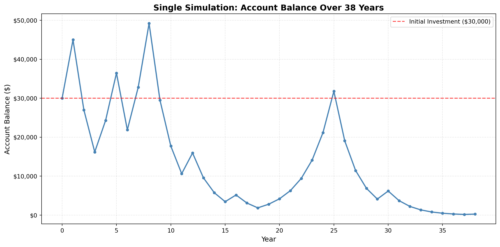
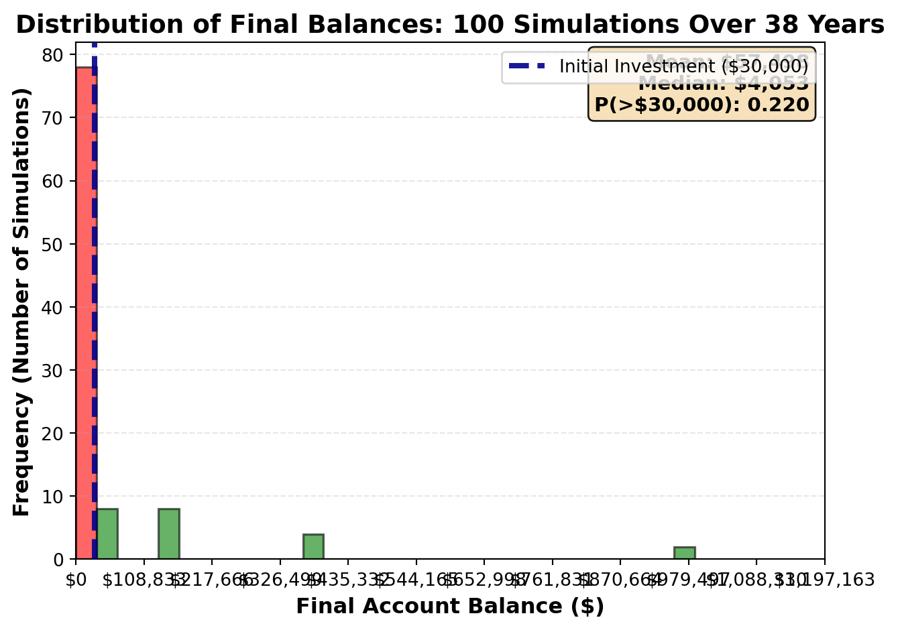
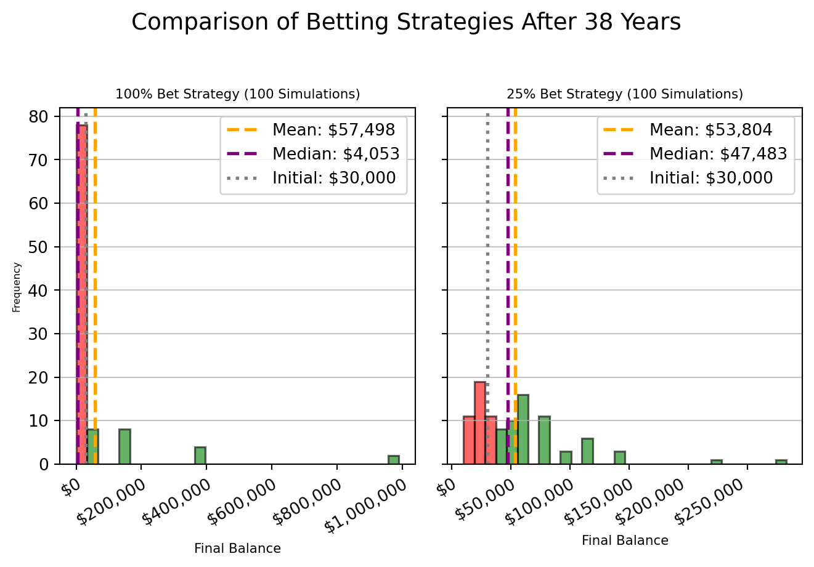

Simulation Challenge
Starter Template with To-Dos
The Investment Game (Brief)
You have the opportunity to buy-in to this game next week with $30,000. Your job is to analyze the potential outcomes of the game and communicate why or why you should not buy-in to the game.
Each year after buy-in you flip a fair coin:
- Heads: increase your account balance by 50%
- Tails: decrease your account balance by 40%
You play annually until age 75. Your mission is to analyze outcomes and communicate insights clearly.
My current age is 37, so the number of years I have to play annually until age of 75 is ** 38 years **.
Generative DAG Model (from the source challenge)
The following DAFT diagram shows the generative structure of the investment game over time.
Analysis Tasks (Fill These In)
1) Expected Value After 1 Flip
TODO: Explain whether the expected value of your account balance after one flip is >, =, or < $30,000. What is the gain in expected value as a percentage of your buy-in? Does this simple analysis suggest you should buy-in to the game?
Coin flip result: Heads (value: 1)
Initial wealth (W0): $30,000
Winnings calculation after 1 coin flip:
Heads: W1 = 1.5 × $30,000 = $45,000.00
Final winnings after 1 flip: $45,000.00
Net change: $15,000.00 (+50.00%)| sim_num | coin_flip | Winnings | |
|---|---|---|---|
| 0 | 1 | 1 | 45000.0 |
Analysis : Since the coin result is Heads after first flip, Winnings has increased to $45,000 which is a gain of 50% from original value of $30,000. Even though this seems to be a profitable outcome, it is not a guarantee as the outcome of the next flip is random and can be tails which will result in a loss. Therefore, it is not a good idea to buy-in to the game based on just a single flip.
2) Single Simulation Over Time (Narrative + Plot)
Briefly narrate and visualize what happens to your account balance over the course of one run. Are you happy with the outcome? Why? or Why not? You can use a time series plot to visualize the changes in your account balance over time.
Initial wealth: $30,000.00
Final wealth after 38 years: $259.36
Net change: $-29,740.64 (-99.14%)
Number of heads: 16 out of 38 flips
Number of tails: 22 out of 38 flips
Interpretation of the above plot:
From the above time-series plot of single run every year, over a period of 38 years, the final winnings value is $259.36. This is a significant drop (~99%) than the initial buy-in value of $30,000.
Number of heads from the simulation data shows 16 as opposed to 22 tails from total of 38 flips (1 each year) which explains more loss than gain in the winnings.
There seems to be more loss than profit beyond 8-year mark. If we really want to give it a go, then it might not be a bad idea to play it for first 8 years where the winnings value reach upto $50,000 which is ~66% gain from initial winning of $30,000
Based on above observations, it does not look like a profitable option to play the simulation over a period of 38 years (until the age of 75)
3) 100 Simulations: Distribution of Final Balances
TODO: Visually and narratively describe the distribution of your account balance after running the 100 simulations. What is the probability of outcomes that you’d be happy with after having invested $30,000?
======================================================================
KEY STATISTICS: 100 Simulations Over 38 Years
======================================================================
Mean final balance: $57,497.89
Median final balance: $4,052.56
P(final > $30,000): 0.220 (22.0%)
======================================================================
Interpretation of above plot:
The blue dashed line at $30,000 shows the initial investment, serves as a stark dividing line.
The histogram is extremely right-skewed. Most simulated final balances land well below the initial $30,000, so the bulk of the bars sit to the left of that blue reference line.
Only a small fraction of runs produce very large gains, which drags the mean up to about $57.5K, while the median sits near $4.1K. That large mean–median gap confirms the long right tail: a few big winners, many losers.
The annotation showing P(final > $30,000) ≈ 0.22 means only about 22% of scenarios finish ahead, so the dominant outcome is a loss even though rare windfalls exist.
Overall the plot signals high downside risk with infrequent, extreme upside.
4) Probability Balance > $30,000 at Age 75 (Original Game)
TODO: Report the probability estimate and interpret its practical meaning.
P(final > $30,000) = 0.220Result: P(final>30,000) = 0.220
A probability of 22.0% means that if we were to undertake this strategy many times, we would, on average, end up with more than your initial $30,000 in only about 22 out of every 100 instances. This indicates a high chance of losing money or ending up with less than your starting money, highlighting the significant risk associated with betting all your capital each round.
5) Modified Strategy (Bet Exactly 25% Each Round)
Instead of having the full balance at risk with each coin flip, assume only 25% of your balance is gambled each year. Compare this to the original game. Which is riskier? Which has better upside?
======================================================================
KEY STATISTICS: 100 Simulations Over 38 Years (100% Bet)
======================================================================
Mean final balance: $57,497.89
Median final balance: $4,052.56
P(final > $30,000): 0.220 (22.0%)
======================================================================
======================================================================
KEY STATISTICS: 100 Simulations Over 38 Years (25% Bet)
======================================================================
Mean final balance: $53,804.33
Median final balance: $47,482.86
P(final > $30,000): 0.700 (70.0%)
======================================================================
Left Histogram (100% Bet Strategy):
This histogram shows a distribution heavily skewed towards the lower end of final balances.
Most of the bars are colored red, indicating that a significant majority of the simulations resulted in a final balance below the initial $30,000 investment
The gray dotted line indicates initial investment of $30,000. The orange dashed line reeprsenting the mean final balance $57,497.89 is considerably higher than the purple dashed line for the median balance ($4,052.56). This wide gap between the mean and median indicates that while a few simulations might have yielded very high returns (pulling up the mean), the typical (median) outcome was quite low, and often a loss.
The probability of finishing above $30,000 is 0.220 which means that only about 22% of scenarios finish ahead, so the dominant outcome is a loss even though rare windfalls exist.
Conclusion: This distribution highlights the high risk and volatility of betting 100% of your wealth each round. Most scenarios ended poorly, with only a small chance of significant gains.
Right Histogram (25% Bet Strategy):
In contrast to 100% stratgey, this histogram plotted out of 25% bet strategy, displays a more spread-out and generally higher distribution of final balances.
A larger portion of the bars are colored green, signifying that more simulations ended with a balance above the initial $30,000.
The gray dotted line indicates initial investment of $30,000. The orange dashed line reeprsenting the mean final balance $53,804.33 and the median final balance $47,482.86 represented by purple dashed line are much closer together. The mean and median final balances both are significantly higher than the initial investment. The median is also now above the initial investment.
The probability of finishing above $30,000 is 0.700 which means that about 70% of scenarios finish ahead, so the dominant outcome is a gain even though rare losses exist.
Conclusion: This distribution demonstrates that by betting a fixed 25% of your wealth, the strategy offers a more favorable risk-reward profile over the long term. It leads to a higher probability of positive outcomes and a better overall wealth accumulation, with less extreme downside risk compared to the 100% betting approach.
6) Briefly Explain Your Findings From The Previous Step in Light of A Concept Known as the “Kelly Criterion”
What is the Kelly Criterion and how does it relate to the modified strategy?
The Kelly Criterion is a formula used to determine the optimal size of a series of bets or investments to maximize the long-term growth rate of wealth. It suggests betting a fraction of one’s current wealth, which is calculated based on the probability of winning and the ratio of potential gain to potential loss.
Specifically, the formula is often given as: f = (bp - q) / b
f is the fraction of current bankroll to wager. b is the odds received (e.g., if you bet $1 and win $$1 and win $1, b=1; if you win $0.50, b=0.5). p is the probability of winning. q is the probability of losing (1-p).
In our simulation:
The probability of winning (p) is 0.5 (coin flip). The probability of losing (q) is also 0.5. When we win, we gain 50% of the bet, so for every $1 bet, we get $0.50 profit, meaning b = 0.5. When we lose, we lose 40% of the bet, which is a loss of $0.40 every $1 bet. Let’s apply the Kelly Criterion to our scenario: f = ( (0.5 * 0.5) - 0.5 ) / 0.5 f = (0.25 - 0.5) / 0.5 f = -0.25 / 0.5 f = -0.5
The negative result suggests that, given these exact parameters (1.5x on win, 0.6x on loss, 50/50 probability), a full Kelly strategy would actually advise not betting, or even shorting (which isn’t really applicable here). This is because the expected value of the bet (p * gain) - (q * loss) is (0.5 * 0.5) - (0.5 * 0.4) = 0.25 - 0.2 = 0.05, which is positive, but the structure of the bet (specifically the return ‘b’) makes the standard Kelly formula yield a negative result when the loss is a higher percentage of the bet than the gain.
The key takeaway from Kelly is that you should bet a fraction of your wealth, not all of it, to avoid ruin and maximize long-term growth. Betting 25% of your wealth (bet_percentage = 0.25) in our modified strategy is a form of fractional Kelly or a prudent fixed-fraction betting strategy, which aims to balance risk and reward. It’s a pragmatic approach to manage risk, even if the strict Kelly formula might suggest a different optimal fraction or even no bet at all under certain conditions. The significant improvement in the median and probability of success in our 25% strategy compared to the 100% strategy highlights the benefit of not risking your entire capital on each independent event over a long series of trials. This is why we see a significant improvement in the median and probability of success in our 25% strategy compared to the 100% strategy.